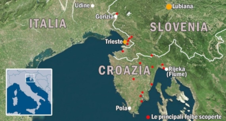

Tito e le foibe
Tito, Pseudonimo dell'uomo politico e capo militare iugoslavo Josip Broz (Kumrovec, Zagabria, 1892 - Lubiana 1980). Dal 1939 segretario generale del Partito comunista iugoslavo, guidò la lotta di liberazione dall'invasore nazista e contro i fascisti croati e italiani. Ebbe la responsabilità politica della repressione anti-italiana di Fiume, Istria, Dalmazia, attuata con l'eliminazione fisica nelle foibe e con le espulsioni. Nell`aprile del 1945 in tutta Italia si festeggia la fine della guerra. Ma nel Friuli Venezia Giulia, proprio in quei giorni, ha inizio un periodo di orrori che durerà a lungo e culminerà con la fuga di circa 350.000 persone, in seguito alle persecuzioni degli jugoslavi di Tito. Le vittime dei massacri furono fascisti, collaborazionisti del governo italiano, spie, ma anche membri del CLN (Comitato di liberazione nazionale) e partigiani. L`eccidio fu, di fatto, una pulizia etnica tesa ad annullare l`identità italiana sul territorio. Migliaia furono le vittime di Tito gettate nelle foibe. Queste ultime, il cui nome deriva dal latino fovĕa (“fossa”), sono voragini rocciose di origine carsica assai numerose nell’Istria, dove se ne contano oltre 1500. Questo filmato, con l’ausilio di prezioso materiale d’archivio, mostra i momenti e i luoghi più significativi di una tragedia troppo spesso fatta oggetto di rimozione.
Capo del governo della nuova Repubblica Iugoslava, adottò una via nazionale al socialismo e di indipendenza da Mosca che portò, nel 1948, alla rottura definitiva con l'URSS. Presidente della Repubblica dal 1953 alla morte, T. fu ispiratore e animatore del movimento dei paesi non allineati.